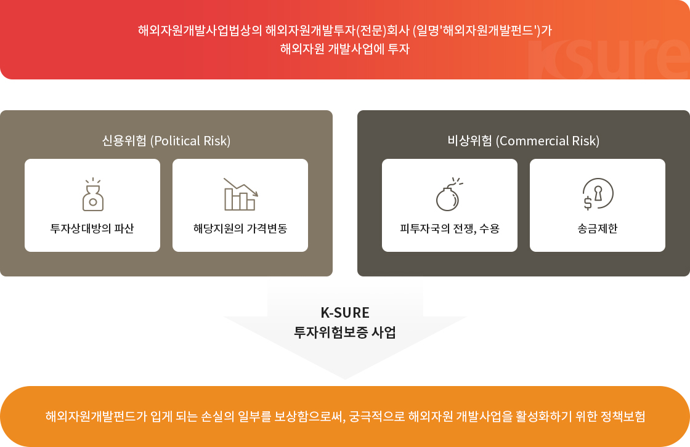
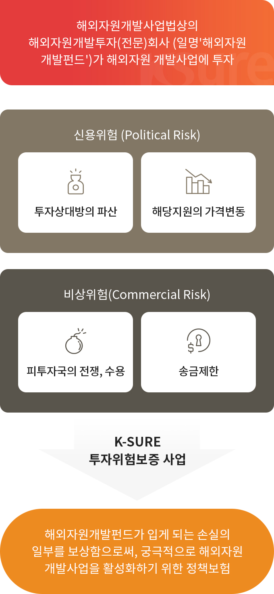

투자위험보증사업
투자위험보증사업
해외자원개발투자회사가 해외자원 개발사업에 투자하여 비상위험, 신용위험으로 입게 되는 손실의 일부를 보상함으로써,
궁극적으로 해외자원 개발사업을 활성화하기 위한 정책 보험입니다.
투자위험보증사업 개요


해외자원개발사업법상의 해외자원개발투자(전문)회사 (일명'해외자원개발펀드')가 해외자원개발사업에투자하여, 피투자국의 전쟁, 수용, 송금제한 등의 비상위험(Poltical Risk)과
투자상대방의 파산,해당지원의 가격변동 등의 신용위험(Commercial Risk)으로 인하여 해외자원개발펀드가 입게 되는 손실의 일부를 보상함으로써, 궁극적으로 해외자원 개발사업을
활성화하기 위한 정책보험입니다.